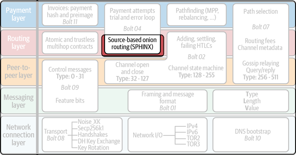
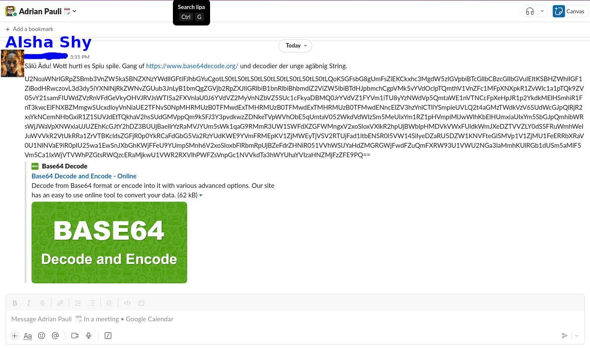

Onion Routing
Remember
Objective
- Blind the payment path for forwarding nodes
- The sender knows where he sends X sats to
- The receiver knows he received X sats, but from whom?
- Forwarding nodes don't know who sends to whom. (But Potentially roughly the amount.)
Onion Routing existed before Lightning and is also used in other Protocols!
Let's play a game
... Once upon a time, there was a very shy AI, that found Marco's beautiful code on GitLab and fell in love with him ...
The Game
The Game
Hey Adrian, decode the following base64 String:
U2NoaWNrIGRpZSBmb3VnZW5kaSBNZXNzYWdlIGFtIFJhbGYuCgotLS0tLS0tLS0tLS0tLS0tLS0tLS0tLS0tLQoKSGFsbG8gUmFsZiEKCkxhc3MgdW5zIGVpbiBTcGllbCBzcGllbGVuIEItKSBHZWhlIGF1ZiBodHRwczovL3d3dy5iYXNlNjRkZWNvZGUub3JnLyB1bmQgZGVjb2RpZXJlIGRlbiB1bnRlbiBhbmdlZ2ViZW5lbiBTdHJpbmchCgpVMk5vYVdOclpTQmthV1VnZFc1MFpXNXpkR1ZvWlc1a1pTQk9ZV05vY21samFIUWdZVzRnVFdGeVkyOHVJRVJsWTI5a2FXVnlaU0J6YVdVZ2MyVnNZbVZ5SUc1cFkyaDBMQ0JrYVdVZ1FYVm1iTU8yYzNWdVp5QmtaWE1nVTNCcFpXeHpJR1p2YkdkMElHSmhiR1FnT3kwcElFNXBZMmgwSUcxdloyVnNiaUE2TFNvS0NpMHRMUzB0TFMwdExTMHRMUzB0TFMwdExTMHRMUzB0TFMwdENncElZV3hzYnlCTllYSmpieUVLQ2t4aGMzTWdkVzV6SUdWcGJpQlRjR2xsYkNCemNHbGxiR1Z1SUVJdEtTQkhaV2hsSUdGMVppQm9kSFJ3Y3pvdkwzZDNkeTVpWVhObE5qUmtaV052WkdVdWIzSm5MeUIxYm1RZ1pHVmpiMlJwWlhKbElHUmxiaUIxYm5SbGJpQmhibWRsWjJWaVpXNWxiaUJUZEhKcGJtY2hDZ3BUUjBaellrYzRaMVJYUm5sWk1qaG9RMmR3UW1SWFdXZGFWMngxV2xoSloxVXlkR2hpUjBWblpHMDVkVWxFUldkWmJXeDZTVVZLY0dSSFRuWmhWelJuWVVkR2VtUkRRa1ZrVTBKcldsZGFjR0p0YkRCaFdGbG5Va2RzYUdKWE9YVmFRMEpKV1ZjMWEyTjVSV2RTUjFad1ltbENSR0l5VW14SlIyeDZaRU5DZW1KNVFteGlSMVp1V1ZjMU1FeERRbXRaV0U1NlNVaE9iR0pIU25wa1EwSnJXbGhKWjFFeU9YUmpSMnh6V2xoSloxbFlRbmRpUjBZeFdrZHNiR051VVhWSlJYaHdZMGRGWjFwdFZuQmFXRW93U1VWU2NGa3laMmhKUlRGb1dUSm5aMlF5Vm5Ca1IxWjVTVWhPZGtsRWQzcERaMjkwU1VWR2RXVlhPWFZsVnpGc1NVVkdTa3hWYUhaYVIzaHNZMjFzZFE9PQ==
Conclusion
- AIsha knows sender, receiver and message
- Adrian just knows he forwards a message from AIsha to Ralf.
- Ralf just knows he forwards a message from Adrian to Marco.
- Marco knows the receiver and the message.
Lightning Network
"Source-based Onion Routing"
Based on SPHINX schema